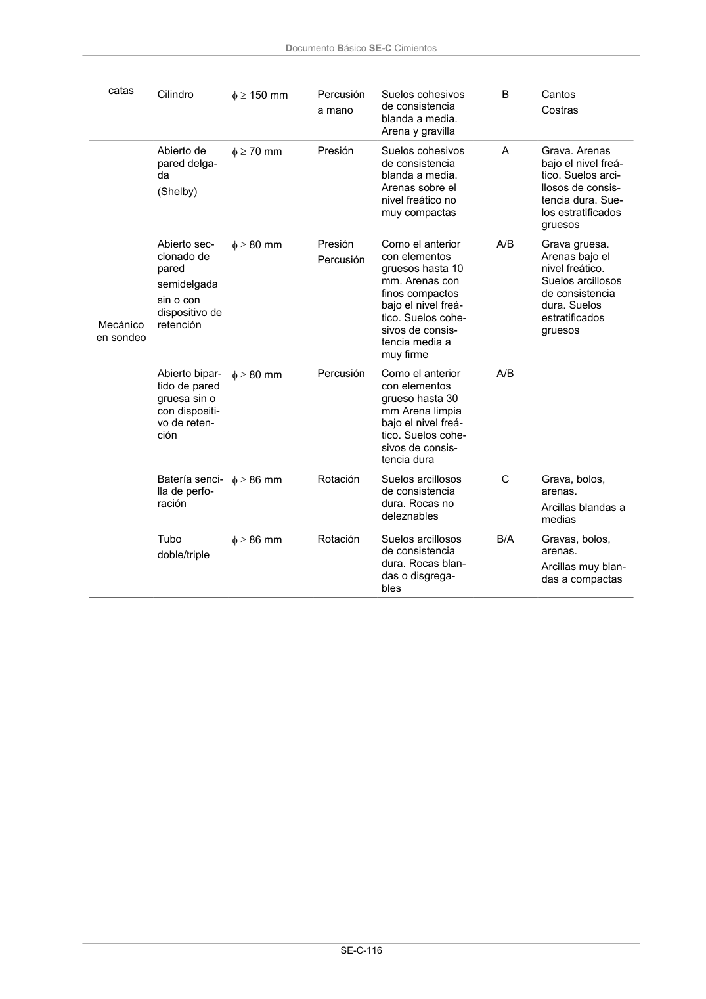
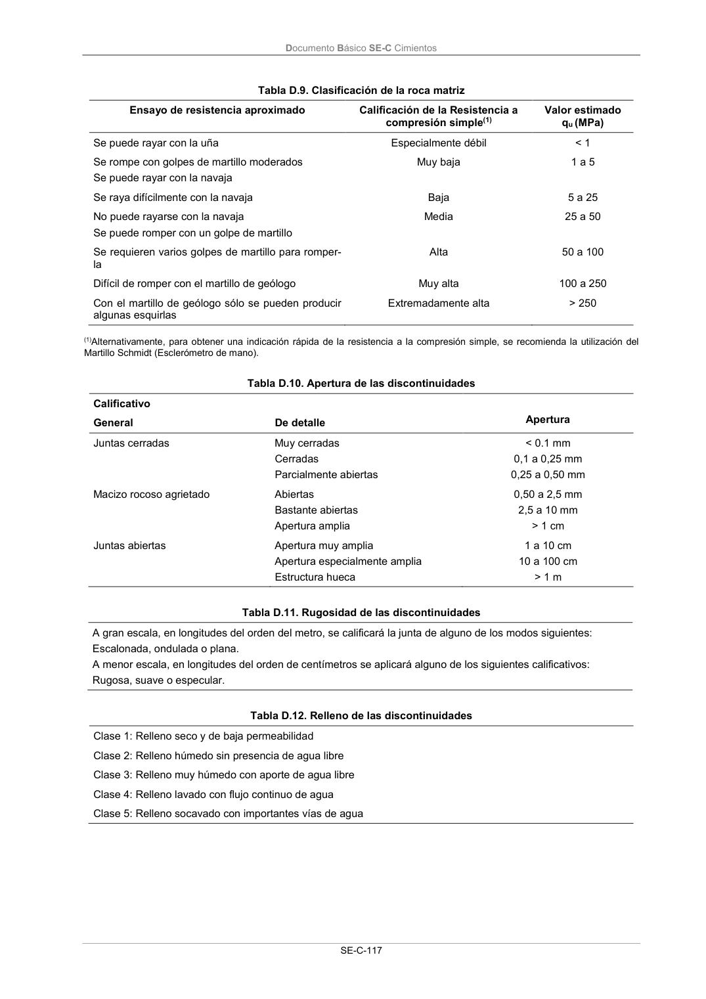
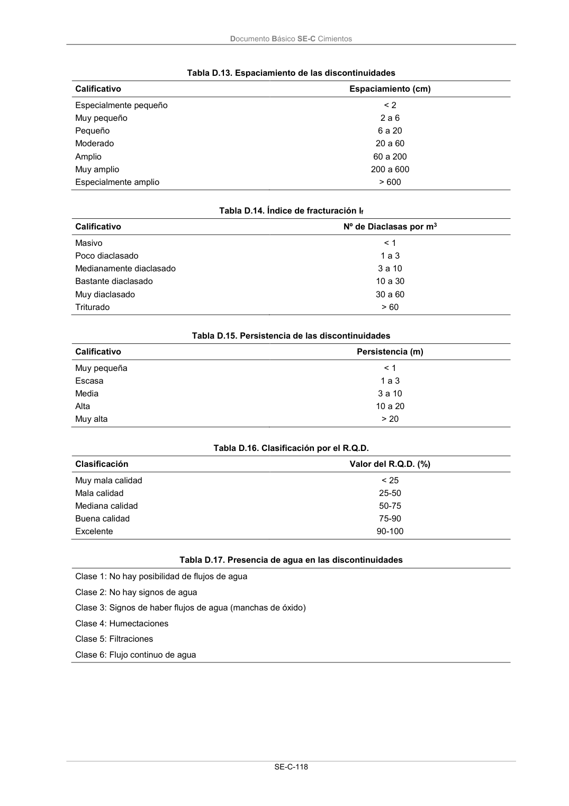
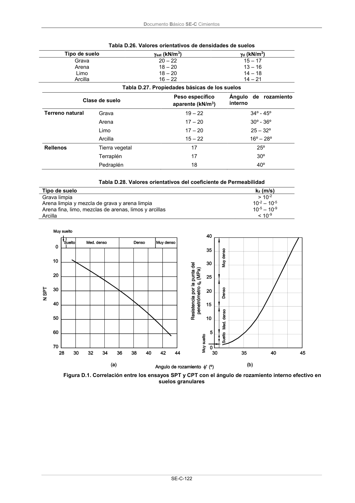
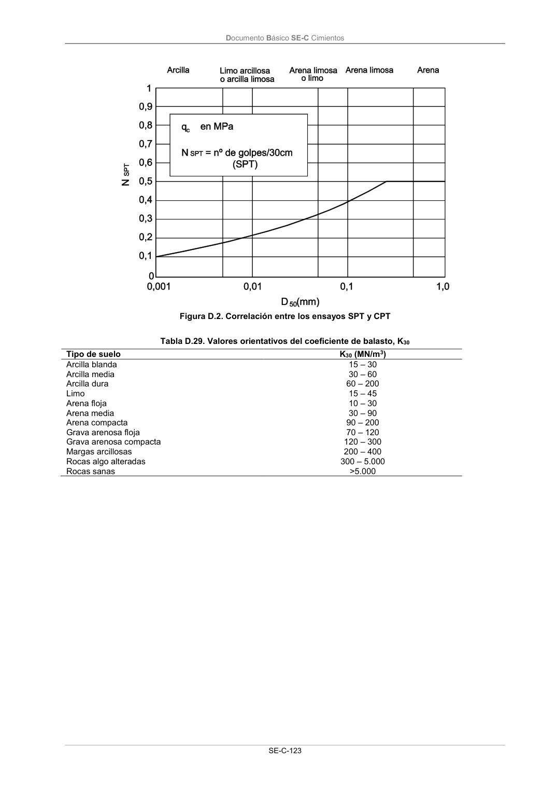

DB-SE-C · D.1 Criterios de clasificación · versión 2019-12-20 · capa oficial
Formatos: JSON compacto · Markdown · PDF fuente
Ámbito del documento · texto del ámbito · documento y tablas
ID técnico a0243 · PDF pág. 118-130 · jerarquía no validada por persona · contrastado con el literal de la página 118 (candidato tipográfico); no validado por persona · padre: a0242
D.1 Criterios de clasificación Tabla D.1. Clasificación de suelos Suelos gruesos(1) Gravas Gruesas Medias Finas 20,0-60,0 mm 6,0-20,0 mm 2,0-6,0 mm Arenas(2) Gruesas Medias Finas 0,60-2,00 mm 0,20-0,60 mm 0,06-0,20 mm Suelos finos(1) (3) Limos Gruesos Medios Finos 0,020-0,060 mm 0,006-0,020 mm 0,002-0,006 mm Arcillas (4) < 0,002 mm (1) Con más del 50% de las partículas distinguibles a simple vista (aprox. 0,1 mm). (2) En función de los datos de que se disponga de ensayos SPT las arenas pueden clasificarse tal y como se indica en la tabla D.2. (3) Con más del 50% de las partículas no distinguible a simple vista (aprox. 0,1 mm). (4) En función de los datos de que se disponga y de la resistencia a compresión simple pueden cla- sificarse las arcillas tal y como se indica en la tabla D.3. Tabla D.2. Compacidad de las arenas Clasificación Índice NSPT Muy floja < 4 Floja 4-10 Media 11-30 Densa 31-50 Muy densa >50 Tabla D.3. Consistencia de las arcillas Clasificación Resistencia a compresión simple qu (kPa) Muy blanda 0-25 Blanda 25-50 Media 50-100 Firme 100-200 Muy firme 200-400 Dura > 400 Documento Básico SE-C Cimientos SE-C-114 Tabla D.4. Clasificación de rocas(1) Rocas sedimentarias: Conglomerados, Areniscas, Limolitas, Argilitas, Margas, Calizas, Calizas margosas, Calcarenitas, Dolomías, Yesos. Rocas metamórficas: Cuarcitas, Pizarras, Esquistos, Gneises, Corneanas. Rocas plutónicas: Granitos, Dioritas, Gabros, Pórfidos, Peridotitas. Rocas volcánicas: Basaltos, Fonolitas, Piroclastos, Traquitas, Ofitas, Riolitas, Andesitas, Dacitas. (1) En la tabla D.5 se proporcionan los criterios de la Sociedad Internacional de Mecánica de Rocas para clasificar las rocas según su grado de meteorización. Tabla D.5. Grado de meteorización de las rocas (ISRM) Grado Denominación Criterio de reconocimiento I Roca sana o fresca La roca no presenta signos visibles de meteorización, pueden existir lige- ras pérdidas de color o pequeñas manchas de óxidos en los planos de discontinuidad II Roca ligeramente me- teorizada La roca y los planos de discontinuidad presentan signos de decoloración. La roca puede estar decolorada en la pared de las juntas pero no es noto- rio que la pared sea más débil que la roca sana III Roca moderadamente meteorizada La roca está decolorada en la pared. La meteorización empieza a penetrar hacia el interior de la roca desde las discontinuidades. El material es nota- blemente más débil en la pared que en la roca sana. Material débil 50% del total IV Roca meteorizada o muy meteorizada Más de la mitad del material está descompuesto a suelo. Aparece roca sana o ligeramente meteorizada de forma discontinua V Roca completamente meteorizada Todo el material está descompuesto a un suelo. La estructura original de la roca se mantiene intacta VI Suelo residual La roca está totalmente descompuesta en un suelo y no puede reconocer- se ni la textura ni la estructura original. El material permanece “in situ” y existe un cambio de volumen importante ISRM: Sociedad Internacional de Mecánica de Rocas Tabla D.6. Utilización de las pruebas de penetración Tipo de Penetrómetro Principio de Funcionamiento Tipo Suelo más idóneo Terreno en que es Impracticable Estático Medición de la resis- tencia a la penetración de una punta y un vástago mediante presión CPTE CPTU UNE-EN ISO 22476- 12:2010 Arcillas y limos muy blan- dos. Arenas finas sueltas a densas sin gravas Rocas, bolos, gravas, suelos cementados. Arcillas muy duras. Arenas muy compac- tas. Suelos muy pre- consolidados y/o ce- mentados Dinámico Medición de la resis- tencia a la penetración de una puntaza me- diante golpeo con una energía normalizada DPH UNE-EN ISO 22476-2:2008 Arenas sueltas a medias. Limos arenosos flojos a medios Rocas, bolos, costras, suelos muy cementa- dos. Conglomerados BORRO DPSH UNE-EN ISO 22476-2:2008 Arenas medias a muy compactas. Arcillas pre- consolidadas sobre el N.F. Gravas arcillosas y areno- sas Rocas, bolos, conglo- merados Documento Básico SE-C Cimientos SE-C-115 Tabla D.7. Utilización de los ensayos in situ En sondeo Tipo Descripción Utilización para Determinar Ensayo de penetración es- tándar (SPT) UNE-EN ISO 22476-3:2006 Nº de golpes NSPT para hincar 30 cm de un cilindro hueco de di- mensiones normalizadas. Golpeo con maza de 63,5 kg cayendo desde 76 cm Compacidad de suelos granula- res. Densidad relativa. Ángulo de rozamiento interno en suelos granulares Resistencia de arcillas preconso- lidadas por encima del nivel freá- tico Ensayo de molinete (Vane Test) UNE-ENV 1997-3:2002 Rotación de unas aspas dispues- tas a 90º e introducidas en el terreno, midiendo el par necesario para hacerlas girar hasta que se produce el corte del suelo Para determinar la resistencia al corte de arcillas blandas por en- cima o por debajo del nivel freáti- co Ensayo presiométrico (P.M.T.) UNE-ENV 1997-3:2002 Dilatación, por gas a presión, de una célula cilíndrica contra las paredes de un sondeo midiendo la deformación volumétrica co- rrespondiente a cada presión hasta llegar, eventualmente, a la rotura del terreno Presión límite y deformabilidad de suelos granulares, arcillas duras, etc. Ensayo Lefranc Medida del caudal de agua bom- beada al terreno a través de un tramo de sondeo de 50 cm Permeabilidad de suelos Ensayo Lugeon Medida de los caudales bombea- dos a un tramo de sondeo, a presiones escalonadas, durante un tiempo de 10 min. Permeabilidad de rocas modera- damente fisuradas En superficie o pozo Ensayo de carga con placa(1) UNE-ENV 1997-3:2002 Medida de los asientos de una placa rígida cuadrada o circular al ir aplicando cargas crecientes, llegando o no a la rotura del te- rreno Relación presión asiento en sue- los granulares, para la placa utili- zada(1) Coeficiente de balasto de cual- quier terreno Capacidad portante sin drenaje de suelos cohesivos En pozo Ensayo de bombeo Medida de la transmisividad y coeficiente de almacenamiento del acuífero en la zona de in- fluencia del pozo Capacidad de agotamiento o rebaje del nivel freático (1) El ensayo de carga con placa debe interpretarse con las lógicas reservas debidas a la diferencia entre las dimensiones de la placa y la de la cimentación proyectada (véase apartado E.5; Figura E.8). Tabla D.8. Tipo y categoría de los tomamuestras Tipo de Muestreo Tipo de to- mamuestras Dimensiones Valores míni- mos Método de hinca Tipo de suelo idóneo Categoría Tipo de suelo en que no es prac- ticable Manual en Bloque o caja Cubo de 200 mm Tallada a mano Suelos cohesivos de consistencia media a dura A Arenas flojas. Suelos disgrega- bles. Gravas En saco 1 kg Pico y pala Arcillas, arenas, gravas, costras C Documento Básico SE-C Cimientos SE-C-116 catas Cilindro 150 mm Percusión a mano Suelos cohesivos de consistencia blanda a media. Arena y gravilla B Cantos Costras Mecánico en sondeo Abierto de pared delga- da (Shelby) 70 mm Presión Suelos cohesivos de consistencia blanda a media. Arenas sobre el nivel freático no muy compactas A Grava. Arenas bajo el nivel freá- tico. Suelos arci- llosos de consis- tencia dura. Sue- los estratificados gruesos Abierto sec- cionado de pared semidelgada sin o con dispositivo de retención 80 mm Presión Percusión Como el anterior con elementos gruesos hasta 10 mm. Arenas con finos compactos bajo el nivel freá- tico. Suelos cohe- sivos de consis- tencia media a muy firme A/B Grava gruesa. Arenas bajo el nivel freático. Suelos arcillosos de consistencia dura. Suelos estratificados gruesos Abierto bipar- tido de pared gruesa sin o con dispositi- vo de reten- ción 80 mm Percusión Como el anterior con elementos grueso hasta 30 mm Arena limpia bajo el nivel freá- tico. Suelos cohe- sivos de consis- tencia dura A/B Batería senci- lla de perfo- ración 86 mm Rotación Suelos arcillosos de consistencia dura. Rocas no deleznables C Grava, bolos, arenas. Arcillas blandas a medias Tubo doble/triple 86 mm Rotación Suelos arcillosos de consistencia dura. Rocas blan- das o disgrega- bles B/A Gravas, bolos, arenas. Arcillas muy blan- das a compactas Documento Básico SE-C Cimientos SE-C-117 Tabla D.9. Clasificación de la roca matriz Ensayo de resistencia aproximado Calificación de la Resistencia a compresión simple(1) Valor estimado qu (MPa) Se puede rayar con la uña Especialmente débil < 1 Se rompe con golpes de martillo moderados Se puede rayar con la navaja Muy baja 1 a 5 Se raya difícilmente con la navaja Baja 5 a 25 No puede rayarse con la navaja Se puede romper con un golpe de martillo Media 25 a 50 Se requieren varios golpes de martillo para romper- la Alta 50 a 100 Difícil de romper con el martillo de geólogo Muy alta 100 a 250 Con el martillo de geólogo sólo se pueden producir algunas esquirlas Extremadamente alta > 250 (1)Alternativamente, para obtener una indicación rápida de la resistencia a la compresión simple, se recomienda la utilización del Martillo Schmidt (Esclerómetro de mano). Tabla D.10. Apertura de las discontinuidades Calificativo Apertura General De detalle Juntas cerradas Muy cerradas Cerradas Parcialmente abiertas < 0.1 mm 0,1 a 0,25 mm 0,25 a 0,50 mm Macizo rocoso agrietado Abiertas Bastante abiertas Apertura amplia 0,50 a 2,5 mm 2,5 a 10 mm > 1 cm Juntas abiertas Apertura muy amplia Apertura especialmente amplia Estructura hueca 1 a 10 cm 10 a 100 cm > 1 m Tabla D.11. Rugosidad de las discontinuidades A gran escala, en longitudes del orden del metro, se calificará la junta de alguno de los modos siguientes: Escalonada, ondulada o plana. A menor escala, en longitudes del orden de centímetros se aplicará alguno de los siguientes calificativos: Rugosa, suave o especular. Tabla D.12. Relleno de las discontinuidades Clase 1: Relleno seco y de baja permeabilidad Clase 2: Relleno húmedo sin presencia de agua libre Clase 3: Relleno muy húmedo con aporte de agua libre Clase 4: Relleno lavado con flujo continuo de agua Clase 5: Relleno socavado con importantes vías de agua Documento Básico SE-C Cimientos SE-C-118 Tabla D.13. Espaciamiento de las discontinuidades Calificativo Espaciamiento (cm) Especialmente pequeño Muy pequeño Pequeño Moderado Amplio Muy amplio Especialmente amplio < 2 2 a 6 6 a 20 20 a 60 60 a 200 200 a 600 > 600 Tabla D.14. Índice de fracturación If Calificativo Nº de Diaclasas por m3 Masivo Poco diaclasado Medianamente diaclasado Bastante diaclasado Muy diaclasado Triturado < 1 1 a 3 3 a 10 10 a 30 30 a 60 > 60 Tabla D.15. Persistencia de las discontinuidades Calificativo Persistencia (m) Muy pequeña Escasa Media Alta Muy alta < 1 1 a 3 3 a 10 10 a 20 > 20 Tabla D.16. Clasificación por el R.Q.D. Clasificación Valor del R.Q.D. (%) Muy mala calidad Mala calidad Mediana calidad Buena calidad Excelente < 25 25-50 50-75 75-90 90-100 Tabla D.17. Presencia de agua en las discontinuidades Clase 1: No hay posibilidad de flujos de agua Clase 2: No hay signos de agua Clase 3: Signos de haber flujos de agua (manchas de óxido) Clase 4: Humectaciones Clase 5: Filtraciones Clase 6: Flujo continuo de agua Documento Básico SE-C Cimientos SE-C-119 Tabla D.18. Ensayos de laboratorio. Suelos Propiedad Ensayos Norma Identificación Estado Resistencia Deformabilidad Colapsabilidad Expansividad Compactación Contenido químico Granulometría por tamizado Granulometría por sedimentación Comprobación de la no plasticidad Límite líquido Límite plástico Límite de retracción Humedad natural Peso específico aparente Peso específico de las partículas Compresión simple Corte directo consolidado y drenado (C.D) Corte directo sin consolidar y sin drenar (UU) Triaxial en cualquier situación de consolidación y drenaje Ensayo edométrico Inundación en edómetro Presión de hinchamiento nulo en edómetro Hinchamiento libre en edómetro Ensayo Lambe Proctor normal Proctor modificado Contenido en carbonatos Contenido cualitativo de sulfatos Contenido en materia orgánica UNE 103101:1995 UNE 103102:1995 UNE 103104:1993 UNE 103103:1994 UNE 103104:1993 UNE103108:1996 UNE-EN ISO 17892-1:2015 UNE103301:1994 UNE-EN ISO 17892-3:2018 UNE 103400:1993 UNE103401:1998 UNE103401:1998 UNE-EN ISO 17892-9:2019 UNE103405:1994 UNE 103406:2006 UNE 103602:1996 UNE 103601:1996 UNE 103600:1996 UNE 103500:1994 UNE 103501:1994 UNE 103200:1993 UNE 103202:2019 UNE 103204:2019 Tabla D.19. Ensayos de laboratorio. Roca matriz Propiedad Ensayos Norma Estado Resistencia Durabilidad Petrografía Humedad natural Porosidad Densidad Absorción Compresión simple Carga puntual Brasileño Resistencia al corte en discontinuidades Desmoronamiento Ciclos de sequedad-Humedad Lámina delgada ISRM parte 1:1977 ISRM parte 1:1977 ISRM parte 1:1977 ISRM parte 1:1977 UNE 22950-1:1990 UNE 146510:2008 UNE 22950-2:1990 UNE 146510:2018 NLT 251:1996 - Documento Básico SE-C Cimientos SE-C-120 Tabla D.20. Denominación matizada de suelos granulares(1) Porcentaje de finos < 35% Denominación % de arcilla y limo Nombre principal Grava o arena - Nombre secundario Arenosa o con grava - Con indicios de Limos o arcillas 1-10 Algo Limosa o arcillosa 10-20 Bastante Limosa o arcillosa 25-35 (1) Los términos arcilla y arcillosa de la tabla deben emplearse cuando se trata de finos plásticos y los términos limo y limosa, cuando los finos no son plásticos o poco plásticos según el criterio de Casagrande. Tabla D.21. Denominación matizada de suelos finos Porcentaje de finos > 35% Denominación % de arena y grava Nombre principal Arcilla o limo < 35 Nombre secundario Arenosa/so o con grava 35-65 Tabla D.22. Clasificación de la agresividad química de suelos, rocas y aguas (EHE) Tipo de Medio agresivo Parámetros(1) Tipo de exposición Qa Qb Qc Ataque débil Ataque medio Ataque fuerte Agua Valor del pH 6,5-5,5 5,5-4,5 < 4,5 CO2 agresivo (mg CO2/l) 15-40 40-100 > 100 Ión amonio (mg NH4+/l) 15-30 30-60 > 60 Ión magnesio (mg Mg2+/l) 300-1000 1000-3000 > 3000 Ión sulfato (mg SO42-/l) 200-600 600-3000 > 3000 Residuo seco a 110º C (mg/l) 75-150 50-75 < 50 Suelo Grado de acidez Baumann-Gully > 20 -(1) -(1) Ión Sulfato (mg SO42-/kg de suelo seco) 2000-3000 3000-12000 > 12000 (1) Estas condiciones no se dan en la práctica Tabla D.23. Valores orientativos de NSPT, resistencia a compresión simple y módulo de elasticidad de suelos Tipo de suelo NSPT qu (kN/m2) E (MN/m2) Suelos muy flojos o muy blandos < 10 0 - 80 < 8 Suelos flojos o blandos 10 - 25 80 - 150 8 – 40 Suelos medios 25 - 50 150 - 300 40 – 100 Suelos compactos o duros 50 – Rechazo 300 - 500 100 – 500 Rocas blandas Rechazo 500 – 5.000 500 – 8.000 Rocas duras Rechazo 5.000 – 40.000 8.000 – 15.000 Rocas muy duras Rechazo > 40.000 >15.000 Tabla D.24. Valores orientativos del coeficiente de Poisson Tipo de suelo Coeficiente de Poisson Arcillas blandas normalmente consolidadas 0,40 Arcillas medias 0,30 Arcillas duras preconsolidadas 0,15 Arenas y suelos granulares 0,30 Documento Básico SE-C Cimientos SE-C-121 Tabla D.25. Presiones admisibles a efectos orientativos Terreno Tipos y condiciones Presión admisisible [Mpa] Observaciones Rocas Rocas ígneas y metamórficas sanas (1) (Granito, diorita, basal- to, gneis) 10 Para los valores apuntados se supone que la cimentación se sitúa sobre roca no meteorizada Rocas metamórficas foliadas sanas (1), (2) (Esquistos, piza- rras) 3 Rocas sedimentarias sanas (1), (2): Pizarras cementadas, limoli- tas, areniscas, calizas sin kars- tificar, conglomerados cemen- tados 1 a 4 Rocas arcillosas sanas (2), (4) 0,5 a 1 Rocas diaclasadas de cualquier tipo con espaciamiento de discontinuidades superior a 0,30m, excepto rocas arcillosas 1 Calizas, areniscas y rocas pizarrosas con pequeño espa- ciamiento de los planos de estratificación(3) - Rocas muy diaclasadas o me- teorizadas(3) - Suelos granulares (% finos inferior al 35% en peso) Gravas y mezclas de arena y grava, muy densas >0,6 Para anchos de cimentación (B) mayor o igual a 1 m y nivel freático situado a una profundidad mayor al ancho de la cimen- tación (B) por debajo de ésta Gravas y mezclas de grava y arena, medianamente densas a densas 0,2 a 0,6 Gravas y mezclas de arena y grava, sueltas <0,2 Arena muy densa >0,3 Arena medianamente densa 0,1 a 0,3 Arena suelta <0,1 Suelos finos (% de finos supe- rior al 35% en peso) Arcillas duras 0,3 a 0,6 Los suelos finos normalmente consolida- dos y ligeramente sobreconsolidados en los que sean de esperar asientos de consolidación serán objeto de un estudio especial. Los suelos arcillosos poten- cialmente expansivos serán objeto de un estudio especial Arcillas muy firmes 0,15 a 0,3 Arcillas firmes 0,075 a 0,15 Arcillas y limos blandos <0,075 Arcillas y limos muy blandos Suelos orgánicos Estudio especial Rellenos Estudio especial (1) Los valores indicados serán aplicables para estratificación o foliación subhorizontal. Los macizos rocosos con discontinuidades inclinadas, especialmente en las cercanías de taludes, deben ser objeto de análisis especial. (2) Se admiten pequeñas discontinuidades con espaciamiento superior a 1 m. (3) Estos casos deben ser investigados “in situ” (4) Estas rocas son susceptibles de hinchar por efecto de la relajación de tensiones asociada a las excavaciones. También son susceptibles de reblandecerse por efecto de su exposición al agua. Documento Básico SE-C Cimientos SE-C-122 Tabla D.26. Valores orientativos de densidades de suelos Tipo de suelo sat (kN/m3) d (kN/m3) Grava 20 – 22 15 – 17 Arena 18 – 20 13 – 16 Limo 18 – 20 14 – 18 Arcilla 16 – 22 14 – 21 Tabla D.27. Propiedades básicas de los suelos Clase de suelo Peso específico aparente (kN/m3) Ángulo de rozamiento interno Terreno natural Grava 19 – 22 34º - 45º Arena 17 – 20 30º - 36º Limo 17 – 20 25 – 32º Arcilla 15 – 22 16º – 28º Rellenos Tierra vegetal 17 25º Terraplén 17 30º Pedraplén 18 40º Tabla D.28. Valores orientativos del coeficiente de Permeabilidad Tipo de suelo kz (m/s) Grava limpia > 10-2 Arena limpia y mezcla de grava y arena limpia 10-2 – 10-5 Arena fina, limo, mezclas de arenas, limos y arcillas 10-5 – 10-9 Arcilla < 10-9 Figura D.1. Correlación entre los ensayos SPT y CPT con el ángulo de rozamiento interno efectivo en suelos granulares Documento Básico SE-C Cimientos SE-C-123 Figura D.2. Correlación entre los ensayos SPT y CPT Tabla D.29. Valores orientativos del coeficiente de balasto, K30 Tipo de suelo K30 (MN/m3) Arcilla blanda 15 – 30 Arcilla media 30 – 60 Arcilla dura 60 – 200 Limo 15 – 45 Arena floja 10 – 30 Arena media 30 – 90 Arena compacta 90 – 200 Grava arenosa floja 70 – 120 Grava arenosa compacta 120 – 300 Margas arcillosas 200 – 400 Rocas algo alteradas 300 – 5.000 Rocas sanas >5.000 Documento Básico SE-C Cimientos SE-C-125










PDF fuente redistribuible: copia fiel enlazada en esta página (SHA256 verificado).